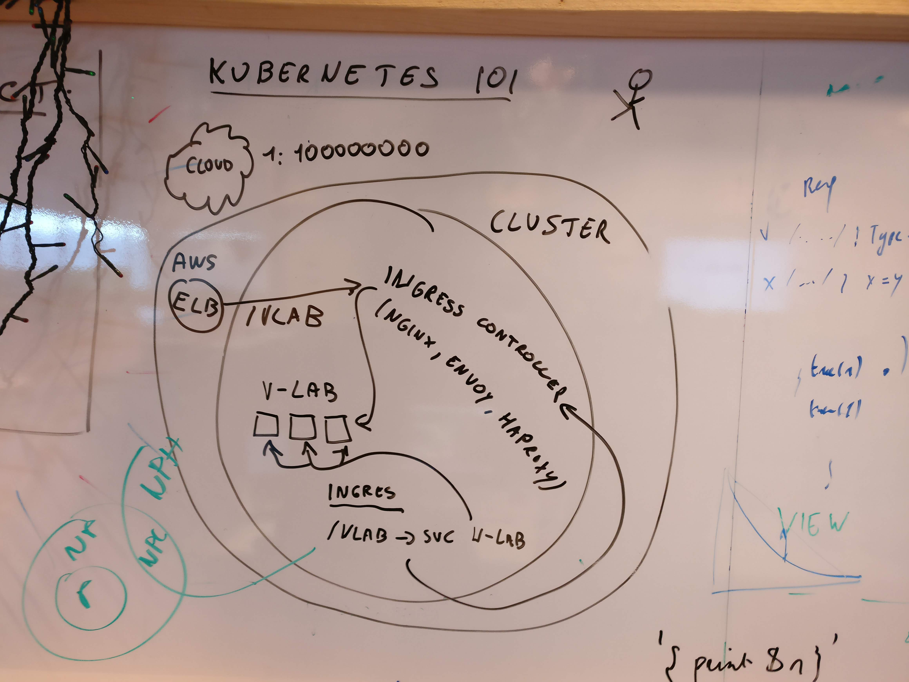

Kubernetes
Roeland Matthijssens
Content
- Kubernetes bootcamp
- Helm overview
- Deploy vikinglabs
Bootcamp
- Installation
- Cluster
- Namespaces
- Deployment
- Pods
- Scaling
Installation
Prerequisites
- kubectl
- aws
- aws-cli
- aws-iam-authenticator
- Authenticate on AWS
Install instructions
Cluster
| Node | VM/physical machine. Serves as a worker in the cluster |
| Master | Manages the cluster |
| Kubelet | Manager application on each node. Talks to master |

Load context
➤ aws eks update-kubeconfig --name UNL-IRE-EKS-PROD-1
## Name is found in the aws admin console
➤ kubectl config get-contexts
CURRENT NAME CLUSTER AUTHINFO NAMESPACE
* arn:aws:eks:eu-west-1:760949815414:cluster/UNL-IRE-EKS-PROD-1 arn:aws:eks:eu-west-1:760949815414:cluster/UNL-IRE-EKS-PROD-1 arn:aws:eks:eu-west-1:760949815414:cluster/UNL-IRE-EKS-PROD-1
## You can rename the context
➤ vim ~/.kube/config
➤ kubectl config get-contexts
CURRENT NAME CLUSTER AUTHINFO NAMESPACE
eks-prod eks-prod arn:aws:eks:eu-west-1:760949815414:cluster/UNL-IRE-EKS-PROD-1Interact with clusters
➤ kubectl config get-clusters
NAME
google
kubernetes
eks-prod➤ kubectl config use-context eks-prod
Switched to context "eks-prod".
➤ kubectl config current-context
eks-prod
Namespaces
Used to group containers, config, pods, ...
Creating
➤ kubectl get namespaces
NAME STATUS AGE
default Active 28d
harryporter Active 12d
kube-public Active 28d
kube-system Active 28d
vikinglab Active 11d➤ kubectl create namespace test
namespace/test created➤ kubectl get namespaces
NAME STATUS AGE
default Active 28d
harryporter Active 12d
kube-public Active 28d
kube-system Active 28d
test Active 1m
vikinglab Active 11dDeleting
➤ kubectl delete namespace test
namespace "test" deleted➤ kubectl get namespaces
NAME STATUS AGE
default Active 28d
harryporter Active 12d
kube-public Active 28d
kube-system Active 28d
vikinglab Active 11d
Deployments
- Defines deployment of application on the cluster
- Defines replication details
- More info

➤ kubectl get deployments --all-namespaces
NAMESPACE NAME DESIRED CURRENT UP-TO-DATE AVAILABLE AGE
harryporter pgp-server 1 1 1 1 11d
kube-system heapster 1 1 1 1 20d
kube-system kube-dns 1 1 1 1 28d
kube-system kubernetes-dashboard 1 1 1 1 20d
kube-system monitoring-influxdb 1 1 1 1 20d
kube-system tiller-deploy 1 1 1 1 11d
vikinglab vikinglab-db-postgresql 1 1 1 1 11d
vikinglab vikinglab-staging-web 2 2 2 2 11d➤ kubectl --namespace vikinglab get deployments
NAME DESIRED CURRENT UP-TO-DATE AVAILABLE AGE
vikinglab-db-postgresql 1 1 1 1 11d
vikinglab-staging-web 2 2 2 2 11dexample yaml
apiVersion: apps/v1
kind: Deployment
metadata:
name: nginx-deployment
labels:
app: nginx
spec:
replicas: 3
selector:
matchLabels:
app: nginx
template:
metadata:
labels:
app: nginx
spec:
containers:
- name: nginx
image: nginx:1.15.4
ports:
- containerPort: 80Deploy Example
➤ kubectl --namespace vikinglab get deployments
NAME DESIRED CURRENT UP-TO-DATE AVAILABLE AGE
vikinglab-db-postgresql 1 1 1 1 11d
vikinglab-staging-web 2 2 2 2 11d➤ kubectl -n vikinglab apply -f nginx-deployment.yaml
deployment.apps/nginx-deployment created➤ kubectl -n vikinglab get deployments
NAME DESIRED CURRENT UP-TO-DATE AVAILABLE AGE
vikinglab-db-postgresql 1 1 1 1 11d
vikinglab-staging-web 2 2 2 2 11d
nginx-deployment 3 3 3 3 14sDelete deployment
➤ kubectl --namespace vikinglab delete deployment nginx-deployment
deployment.extensions "nginx-deployment" deleted➤ kubectl -n vikinglab get deployments
NAME DESIRED CURRENT UP-TO-DATE AVAILABLE AGE
vikinglab-db-postgresql 1 1 1 1 11d
vikinglab-staging-web 2 2 2 2 11d
Pods
A pod is a group of one or more containers with shared storage/network and a specification for how to run the containers.
More info

➤ kubectl get pods -n vikinglab
NAME READY STATUS RESTARTS AGE
vikinglab-db-postgresql-866bcfcbdc-2fm2l 1/1 Running 0 4d
vikinglab-staging-web-78d6bbf75f-97ql9 1/1 Running 0 4d
vikinglab-staging-web-78d6bbf75f-csw4c 1/1 Running 0 4dDescribe
➤ kubectl describe pods -n vikinglab vikinglab-staging-web-78d6bbf75f-97ql9
Name: vikinglab-staging-web-78d6bbf75f-97ql9
Namespace: vikinglab
Node: ip-10-27-4-4.eu-west-1.compute.internal/10.27.4.4
Start Time: Thu, 25 Oct 2018 13:51:59 +0200
Labels: app.kubernetes.io/instance=vikinglab-staging
app.kubernetes.io/name=vikinglab
pod-template-hash=3482669319
Annotations:
Status: Running
IP: 10.27.6.123
Controlled By: ReplicaSet/vikinglab-staging-web-78d6bbf75f
Containers:
vikinglab:
Container ID: docker://1607d030230f7405f60be56c6dc5a670846572b5e7039f1205c6ead87971d160
Image: gcr.io/kubernetes-poc-200010/vikinglab:a3517ca-dirty
Image ID: docker-pullable://gcr.io/kubernetes-poc-200010/vikinglab@sha256:1baf3202e51c5f7313d7e294e6224c52f2310ca08a8c4b4acbcd1c534964999a
Port: 8030/TCP
Host Port: 0/TCP
Command:
python
manage.py
runserver
0.0.0.0:8030
State: Running
Started: Thu, 25 Oct 2018 13:52:00 +0200
Ready: True
Restart Count: 0
Environment Variables from:
vikinglab-staging Secret Optional: false
vikinglab-staging ConfigMap Optional: false
Environment:
Mounts:
/var/run/secrets/kubernetes.io/serviceaccount from default-token-nnkwj (ro)
Conditions:
Type Status
Initialized True
Ready True
PodScheduled True
Volumes:
default-token-nnkwj:
Type: Secret (a volume populated by a Secret)
SecretName: default-token-nnkwj
Optional: false
QoS Class: BestEffort
Node-Selectors:
Tolerations: node.kubernetes.io/not-ready:NoExecute for 300s
node.kubernetes.io/unreachable:NoExecute for 300s
Events:
NAME READY STATUS RESTARTS AGE
vikinglab-db-postgresql-866bcfcbdc-2fm2l 1/1 Running 0 4d
vikinglab-staging-web-78d6bbf75f-97ql9 1/1 Running 0 4d
vikinglab-staging-web-78d6bbf75f-csw4c 1/1 Running 0 4d Bash
➤ kubectl exec -ti vikinglab-staging-web-78d6bbf75f-97ql9 sh -n vikinglab
/data/src # hostname
vikinglab-staging-web-78d6bbf75f-97ql9Get logs
➤ kubectl logs vikinglab-staging-web-78d6bbf75f-csw4c -n vikinglab
...
Not Found: /info.php
WARNING 2018-10-25 14:13:47,607 log Not Found: /info.php
[25/Oct/2018 14:13:47] "GET /info.php HTTP/1.1" 404 2065
Not Found: /.
WARNING 2018-10-25 14:13:59,432 log Not Found: /.
[25/Oct/2018 14:13:59] "GET /. HTTP/1.1" 404 2048
[25/Oct/2018 14:33:28] "GET / HTTP/1.1" 302 0
[25/Oct/2018 14:34:41] "GET /static/js/core-all.js HTTP/1.1" 404 1722
[25/Oct/2018 14:35:15] "GET /static/vikinglab/img/header.jpg HTTP/1.1" 200 425302
[25/Oct/2018 14:35:15] "GET /static/vikinglab/img/header.jpg HTTP/1.1" 200 425302
[25/Oct/2018 14:35:15] "GET /static/vikinglab/img/header.jpg HTTP/1.1" 200 425302
Scaling


Scale up
➤ kubectl get pods -n vikinglab
NAME READY STATUS RESTARTS AGE
vikinglab-db-postgresql-866bcfcbdc-2fm2l 1/1 Running 0 4d
vikinglab-staging-web-78d6bbf75f-97ql9 1/1 Running 0 4d
vikinglab-staging-web-78d6bbf75f-csw4c 1/1 Running 0 4d➤ kubectl scale deployments/vikinglab-staging-web -n vikinglab --replicas=4
deployment.extensions/vikinglab-staging-web scaledNAME READY STATUS RESTARTS AGE
vikinglab-db-postgresql-866bcfcbdc-2fm2l 1/1 Running 0 4d
vikinglab-staging-web-78d6bbf75f-97ql9 1/1 Running 0 4d
vikinglab-staging-web-78d6bbf75f-csw4c 1/1 Running 0 4d
vikinglab-staging-web-78d6bbf75f-vn2bk 1/1 Running 0 4s
vikinglab-staging-web-78d6bbf75f-xp4qt 1/1 Running 0 4sScale down
➤ kubectl scale deployments/vikinglab-staging-web -n vikinglab --replicas=2
deployment.extensions/vikinglab-staging-web scaled➤ kubectl get pods -n vikinglab
NAME READY STATUS RESTARTS AGE
vikinglab-db-postgresql-866bcfcbdc-2fm2l 1/1 Running 0 4d
vikinglab-staging-web-78d6bbf75f-97ql9 1/1 Running 0 4d
vikinglab-staging-web-78d6bbf75f-csw4c 1/1 Running 0 4d
vikinglab-staging-web-78d6bbf75f-vn2bk 1/1 Terminating 0 16s
vikinglab-staging-web-78d6bbf75f-xp4qt 1/1 Terminating 0 16s
Helm
Kubernetes Package Manager
Installation
- Install helm ( Guide )
➤ helm init
$HELM_HOME has been configured at /home/enermis/.helm.
Warning: Tiller is already installed in the cluster.
(Use --client-only to suppress this message, or --upgrade to
upgrade Tiller to the current version.)
Happy Helming!This will install helm/tiller on the cluster and initialize your local configuration
Charts
Package definitions
Public stable repo
Find package to install
➤ helm repo update
Hang tight while we grab the latest from your chart repositories...
...Skip local chart repository
...Successfully got an update from the "stable" chart repository
Update Complete. ⎈ Happy Helming!⎈➤ helm search mysql
NAME CHART VERSION APP VERSION DESCRIPTION
stable/mysql 0.10.2 5.7.14 Fast, reliable, scalable, and easy to use open-source rel...
stable/mysqldump 1.0.0 5.7.21 A Helm chart to help backup MySQL databases using mysqldump
stable/prometheus-mysql-exporter 0.2.1 v0.11.0 A Helm chart for prometheus mysql exporter with cloudsqlp...
stable/percona 0.3.3 5.7.17 free, fully compatible, enhanced, open source drop-in rep...
stable/percona-xtradb-cluster 0.3.0 5.7.19 free, fully compatible, enhanced, open source drop-in rep...
stable/phpmyadmin 1.2.2 4.8.3 phpMyAdmin is an mysql administration frontend
stable/gcloud-sqlproxy 0.5.0 1.11 Google Cloud SQL Proxy
stable/mariadb 5.2.2 10.1.36 Fast, reliable, scalable, and easy to use open-source rel...Install package
➤ helm install stable/mysql --name mysql
NAME: mysql
LAST DEPLOYED: Mon Oct 29 20:14:27 2018
NAMESPACE: default
STATUS: DEPLOYED
RESOURCES:
==> v1/Pod(related)
NAME READY STATUS RESTARTS AGE
mysql-mysql-65c8964546-tbn4c 0/1 Pending 0 0s
==> v1/Secret
NAME AGE
mysql-mysql 0s
==> v1/ConfigMap
mysql-mysql-test 0s
==> v1/PersistentVolumeClaim
mysql-mysql 0s
==> v1/Service
mysql-mysql 0s
==> v1beta1/Deployment
mysql-mysql 0s
NOTES:
MySQL can be accessed via port 3306 on the following DNS name from within your cluster:
mysql-mysql.default.svc.cluster.local
To get your root password run:
MYSQL_ROOT_PASSWORD=$(kubectl get secret --namespace default mysql-mysql -o jsonpath="{.data.mysql-root-password}" | base64 --decode; echo)
To connect to your database:
1. Run an Ubuntu pod that you can use as a client:
kubectl run -i --tty ubuntu --image=ubuntu:16.04 --restart=Never -- bash -il
2. Install the mysql client:
$ apt-get update && apt-get install mysql-client -y
3. Connect using the mysql cli, then provide your password:
$ mysql -h mysql-mysql -p
To connect to your database directly from outside the K8s cluster:
MYSQL_HOST=127.0.0.1
MYSQL_PORT=3306
# Execute the following command to route the connection:
kubectl port-forward svc/mysql-mysql 3306
mysql -h ${MYSQL_HOST} -P${MYSQL_PORT} -u root -p${MYSQL_ROOT_PASSWORD}List installed packages
➤ helm list
NAME REVISION UPDATED STATUS CHART APP VERSION NAMESPACE
mysql 1 Mon Oct 29 20:14:27 2018 DEPLOYED mysql-0.10.2 5.7.14 default
vikinglab-db 1 Thu Oct 18 10:22:50 2018 DEPLOYED postgresql-0.18.1 9.6.2 vikinglab
vikinglab-staging 2 Thu Oct 25 17:04:04 2018 DEPLOYED vikinglab-0.1.0 1.0 vikinglab➤ kubectl get pods
NAME READY STATUS RESTARTS AGE
mysql-65c8964546-tbn4c 1/1 Running 0 8mUninstall package
➤ helm delete mysql
release "mysql" deleted➤ helm ls
NAME REVISION UPDATED STATUS CHART APP VERSION NAMESPACE
vikinglab-db 1 Thu Oct 18 10:22:50 2018 DEPLOYED postgresql-0.18.1 9.6.2 vikinglab
vikinglab-staging 2 Thu Oct 25 17:04:04 2018 DEPLOYED vikinglab-0.1.0 1.0 vikinglab➤ kubectl get pods
NAME READY STATUS RESTARTS AGE
mysql-65c8964546-tbn4c 0/1 Terminating 0 12m
New Chart
➤ helm create test-helm
Creating test-helm
➤ cd test-helm
test-helm ➤ tree
.
├── charts
├── Chart.yaml # Manifest file
├── templates
│ ├── deployment.yaml
│ ├── _helpers.tpl
│ ├── ingress.yaml
│ ├── NOTES.txt
│ └── service.yaml
└── values.yaml
2 directories, 7 filesInstall chart
#!/bin/bash
set -o errexit
: ${ENVIRONMENT:=prod}
: ${KUBE_NAMESPACE:=vikinglab}
: ${KUBE_CONTEXT:=eks-prod}
DRY_RUN=${DRY_RUN:+1}
KUBECTL="kubectl --context=${KUBE_CONTEXT}"
$KUBECTL get namespace "$KUBE_NAMESPACE" 2>/dev/null >&2 || {
# Namespace does not exist, create it
if [[ $DRY_RUN ]]; then
echo "Would create namespace ${KUBE_NAMESPACE}"
else
$KUBECTL create namespace "$KUBE_NAMESPACE" --dry-run -o yaml | $KUBECTL apply -f -
fi
}
HELM_FLAGS=
if [[ $DRY_RUN ]]; then
HELM_FLAGS="--dry-run --debug"
fi
# Deploy app
sops -d ./values-${ENVIRONMENT}.yaml \
| perl -pe 's/(secrets|[A-Z]|\.key)\K_encrypted(?=\:)//g' \
| helm upgrade --install --namespace ${KUBE_NAMESPACE} -f - $HELM_FLAGS vikinglab-${ENVIRONMENT} ./vikinglab-helm
Configuration of the applicationSops
Ingress
intermediate load balancer/dns
Deploy viking-lab
-
Build app container
./build.sh -
re-deploy helm package
ENVIRONMENT=staging ./k8s/install.sh